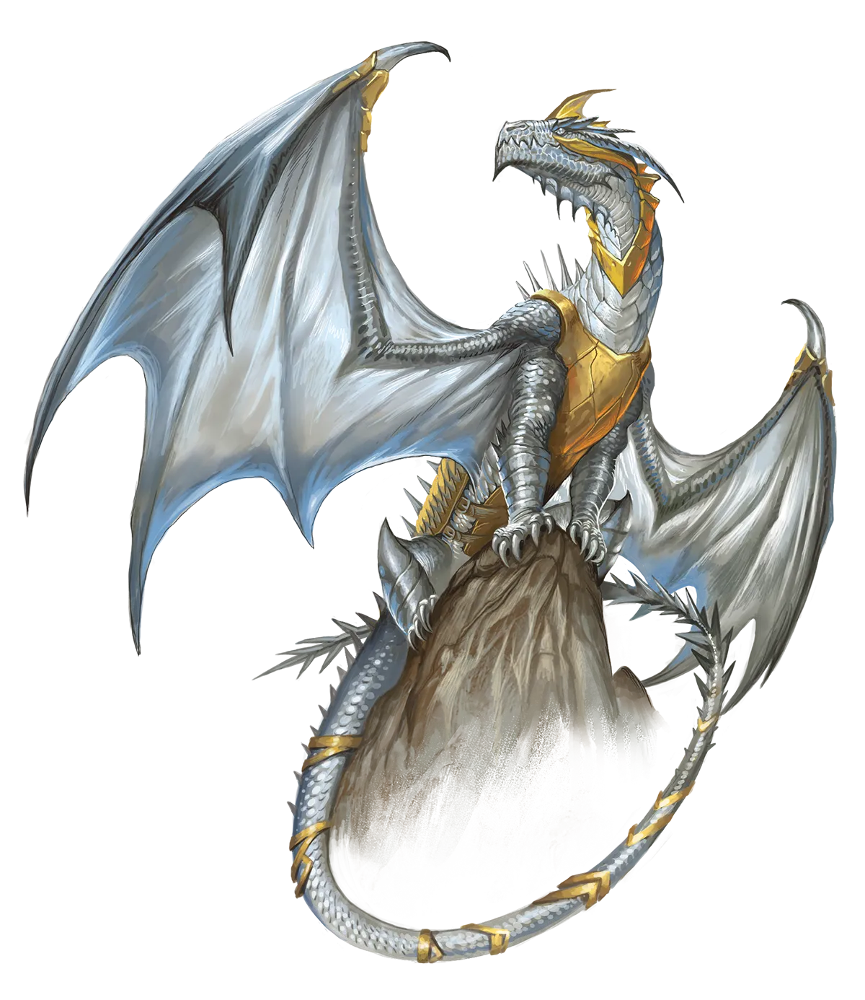
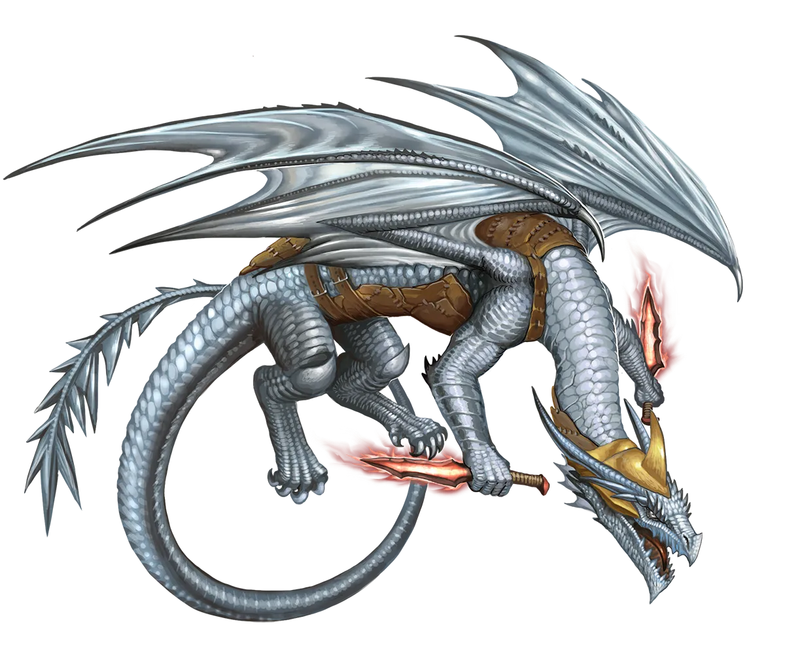

一线希望
银龙出于一种天真的正义感，寻求各种形式的正义。这意味着他们很清楚永恒之光仪式的权衡取舍，不像有些更不负责任的龙类可能会一时兴起就举行仪式。这就是为什么他们寻求尽可能多的“一线希望”，以使仪式的效益超过其负面状况。虽然你可能认为他们会过度专注于所追寻的特定正义形式，但这一实践实际上引导他们深入完全无关的领域，寻找对他人最大益处的事。结果是，除非他们身处非常不寻常的处境，否则他们通常最终会稀释自己的意图来做到这一点。最典型的例子就是他们用仪式的魔法从绝症中拯救某个无关的人。
银龙 Silver Dragon |
|
|
银龙往往是正义的捍卫者。即使不是，他们心中也怀有深深的信念。而正是这样的信念，最常引导银龙走向永恒之光仪式。当银龙的成长潜力对于其信念而言太过缓慢，而危险又超出了龙的力量时，永恒之光仪式便成为放弃或贸然冲入危险的诱人替代之选。这需要把握龙族标准下的特定时机――仪式超载其潜力后，龙有数周或数月的时间成长，而自然衰老和增长力量则需要数百年，那等待太过漫长。银龙会在深思熟虑后做出这样的决定，期间他们很可能去寻找另一名身患绝症的生物，用仪式的后续效果拯救对方，若可能则与其信念相关，但往往那只是一个相对无名的无辜者。因此，永恒银龙比其他永光龙类更有可能通过仪式与另一生物缔结牵绊，甚至可能是某个素不相识的陌生人。这可能成为终生友谊的牵绊，以感谢龙的慷慨，也可能就此分道扬镳。最悲惨的情形是，被龙拯救的人成了恶棍并伤害他人，银龙因此感到荣誉所系，必须追踪并击败这个与自己共享牵绊之人，以赎清自己无意中助长其恶行的罪过。 传统主义银龙通常不会对其永恒同族争论或表达负面情绪，即使他们认为永恒银龙犯下了严重且短视的错误。然而，一个敏锐感知周围情绪的永光龙可以察觉到那种沉默的不赞同。如果被追问，传统主义银龙可能会说：“我不是生气，我只是失望。” 永恒银龙几乎总是试图加入冒险队伍、骑士团，或其他与银龙信念一致的既定社会团体。拥有一个支持的团体是完全合理的，因为他们可以在银龙相对虚弱的时期保护它，让龙能够立即朝着自己的信念努力，并与之共同成长，成为变革的重要力量。银龙对于其团体是由龙类还是非龙类组成并不挑剔；信念的一致至关重要。因此，他们更可能与非龙类而非其他龙类共享一个团体，仅仅因为短命种族的成员数量众多。银龙的团体也很有可能容纳银龙的恩惠伴日――那个因永恒之光仪式的意外益处而被银龙拯救的人。这可以为冒险队伍增添有趣的动态，因为两者之间微小的魔法牵绊为他们与其他队友的关系增添了变数。 一线希望 银龙出于一种天真的正义感，寻求各种形式的正义。这意味着他们很清楚永恒之光仪式的权衡取舍，不像有些更不负责任的龙类可能会一时兴起就举行仪式。这就是为什么他们寻求尽可能多的“一线希望”，以使仪式的效益超过其负面状况。虽然你可能认为他们会过度专注于所追寻的特定正义形式，但这一实践实际上引导他们深入完全无关的领域，寻找对他人最大益处的事。结果是，除非他们身处非常不寻常的处境，否则他们通常最终会稀释自己的意图来做到这一点。最典型的例子就是他们用仪式的魔法从绝症中拯救某个无关的人。 银龙特质 Silver Dragon Traits 你出身于一脉崇尚骑士精神的正义卫士――银龙世系。 |
  |